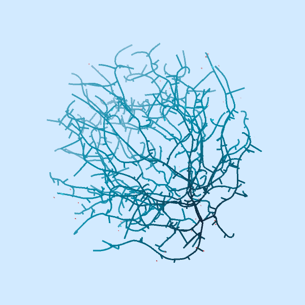

Radix es un espacio transdisciplinar en el que convergen las matemáticas, las ciencias naturales, el diseño y el arte para dar lugar a nuevas formas de investigación, creación y aprendizaje.
Orientado a la investigación y el desarrollo de modelos bioinspirados mediante algoritmos, simulaciones y prototipos.
Ciencia, arte y tecnología en experiencias educativas. Propuestas activas para el aula, talleres y aprendizaje interdisciplinar.
Creación de obras que traducen estructuras y procesos naturales en artefactos visuales, táctiles y sensoriales.
En Radix exploramos los tipos de crecimiento biológicos a través de modelos matemáticos, profundizamos en su naturaleza y buscamos reinterpretar su belleza.

▶ Reproducir video